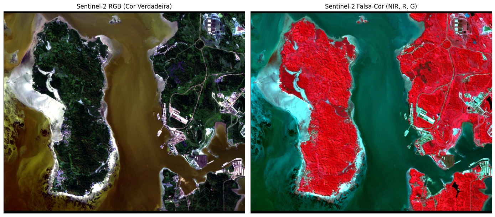

Notebook extraído do github do livro do prof. Quisheng Wu
Author
Qiusheng Wu
Published
September 10, 2027
Segmentação semantica
O fluxo mais direto com o geoai consiste em utilizar a função geoai.timm_segmentation_from_hub. Essa função permite baixar os pesos de um modelo já treinado no Hugging Face Hub e aplicar a inferência em mosaico (tiled inference) sobre um recorte local sem necessidade de retreinar a rede.
Abaixo está uma estrutura completa e pronta para notebook (.ipynb), dividida por blocos de aula.
1: Instalação das Dependências (Colab)
# Instalação do geoai e dependências de visão computacional/geoprocessamento!pip install -q geoai-py rasterio matplotlib huggingface_hub
Installing build dependencies ... done
Getting requirements to build wheel ... done
Preparing metadata (pyproject.toml) ... done
Building wheel for antlr4-python3-runtime (pyproject.toml) ... done
2: Importação das Bibliotecas
import osimport rasterio as rioimport numpy as npimport matplotlib.pyplot as pltfrom matplotlib.colors import ListedColormapfrom matplotlib.patches import Patchimport geoai
3: Download do Recorte Sentinel-2 (RGB + NIR)
Aqui você pode apontar para o seu repositório (GitHub Releases, Source Cooperative, ou Google Drive público):
import osimport urllib.requestimport rasterio as rio# 1. URL de origems2_url ="https://github.com/Alixandrini/PPEC083/raw/refs/heads/main/sentinel_2/S2_Ilha_de_mare_4b.tif"# 2. Caminho do arquivo LOCAL que será salvo no Colabinput_raster ="S2_Ilha_de_mare_4b.tif"# 3. Download explícito salvando com o nome do arquivo localifnot os.path.exists(input_raster):print("Baixando o recorte Sentinel-2...") urllib.request.urlretrieve(s2_url, input_raster)print("Download concluído com sucesso!")else:print("Arquivo local já existente.")# 4. Inspeção dos metadados locaiswith rio.open(input_raster) as src:print(f"Arquivo local: {input_raster}")print(f"Dimensões: {src.width} x {src.height} pixels")print(f"Bandas: {src.count}")print(f"CRS: {src.crs}")print(f"Resolução espacial: {src.res[0]:.2f} m")
Baixando o recorte Sentinel-2...
Download concluído com sucesso!
Arquivo local: S2_Ilha_de_mare_4b.tif
Dimensões: 828 x 693 pixels
Bandas: 4
CRS: EPSG:32724
Resolução espacial: 10.00 m
4: Visualização das Composições (RGB e Falsa-Cor Urbana/Vegetação)
import numpy as npimport matplotlib.pyplot as pltwith rio.open("S2_Ilha_de_mare_4b.tif") as src:# Lê as 4 bandas (1: Red, 2: Green, 3: Blue, 4: NIR) data = src.read([1, 2, 3, 4]).astype(np.float32) nodata_val = src.nodatadef stretch_robusto(band, nodata=None):# Mascara valores inválidos, zeros de fundo e NaNs mask_valida =~np.isnan(band)if nodata isnotNone: mask_valida &= (band != nodata) mask_valida &= (band >0) # Evita zeros de recorte/borda# Se a banda inteira for nula, evita divisão por zeroifnot np.any(mask_valida):return np.zeros_like(band) p2, p98 = np.percentile(band[mask_valida], (2, 98))if p98 == p2:return np.zeros_like(band) normalizado = (band - p2) / (p98 - p2)return np.clip(normalizado, 0, 1)r_norm = stretch_robusto(data[0], nodata_val)g_norm = stretch_robusto(data[1], nodata_val)b_norm = stretch_robusto(data[2], nodata_val)nir_norm = stretch_robusto(data[3], nodata_val)rgb = np.stack([r_norm, g_norm, b_norm], axis=-1)cir = np.stack([nir_norm, r_norm, g_norm], axis=-1)fig, ax = plt.subplots(1, 2, figsize=(14, 7))ax[0].imshow(rgb)ax[0].set_title("Sentinel-2 RGB (Cor Verdadeira)")ax[0].axis("off")ax[1].imshow(cir)ax[1].set_title("Sentinel-2 Falsa-Cor (NIR, R, G)")ax[1].axis("off")plt.tight_layout()plt.show()

5: Inferência com Modelo Pré-treinado do Hugging Face Hub
O geoai baixa a arquitetura e os pesos diretamente via repo_id e fatia a imagem em blocos com sobreposição (overlap) para evitar linhas de costura:
from huggingface_hub import notebook_loginnotebook_login()
Login successful. Logged in as mauro-alixandrini (token: oauth-mauro-alixandrini). This token will be refreshed automatically when it expires.
!pip install omniwatermask
Collecting omniwatermask
Downloading omniwatermask-0.6.2-py3-none-any.whl.metadata (14 kB)
Requirement already satisfied: numpy>=2.0 in /usr/local/lib/python3.13/dist-packages (from omniwatermask) (2.1.3)
Collecting omnicloudmask>=1.7.1 (from omniwatermask)
Downloading omnicloudmask-1.8.0-py3-none-any.whl.metadata (4.9 kB)
Requirement already satisfied: opencv-python>=4.9.0.80 in /usr/local/lib/python3.13/dist-packages (from omniwatermask) (5.0.0.93)
Requirement already satisfied: geopandas>=1.0 in /usr/local/lib/python3.13/dist-packages (from omniwatermask) (1.2.0)
Collecting osmnx>=2.0.0 (from omniwatermask)
Downloading osmnx-2.1.1-py3-none-any.whl.metadata (4.7 kB)
Requirement already satisfied: overturemaps>=1.0.0 in /usr/local/lib/python3.13/dist-packages (from omniwatermask) (1.0.2)
Requirement already satisfied: scipy>=1.10.0 in /usr/local/lib/python3.13/dist-packages (from omniwatermask) (1.16.3)
Requirement already satisfied: pyarrow>=15.0.2 in /usr/local/lib/python3.13/dist-packages (from omniwatermask) (23.0.1)
Requirement already satisfied: huggingface_hub>=0.28.1 in /usr/local/lib/python3.13/dist-packages (from omniwatermask) (1.33.0)
Requirement already satisfied: safetensors>=0.3.0 in /usr/local/lib/python3.13/dist-packages (from omniwatermask) (0.8.0)
Requirement already satisfied: gdown>=5.1.0 in /usr/local/lib/python3.13/dist-packages (from omniwatermask) (5.2.2)
Requirement already satisfied: rasterio>=1.3 in /usr/local/lib/python3.13/dist-packages (from omniwatermask) (1.5.2)
Requirement already satisfied: timm>=0.9 in /usr/local/lib/python3.13/dist-packages (from omniwatermask) (1.0.30)
Requirement already satisfied: torch>=2.3.0 in /usr/local/lib/python3.13/dist-packages (from omniwatermask) (2.11.0+cpu)
Requirement already satisfied: tqdm>=4.0 in /usr/local/lib/python3.13/dist-packages (from omniwatermask) (4.67.3)
Requirement already satisfied: platformdirs>=4.0.0 in /usr/local/lib/python3.13/dist-packages (from omniwatermask) (4.13.5)
Requirement already satisfied: fastai>=2.7 in /usr/local/lib/python3.13/dist-packages (from omniwatermask) (2.8.12)
Requirement already satisfied: fastdownload<2,>=0.0.8 in /usr/local/lib/python3.13/dist-packages (from fastai>=2.7->omniwatermask) (0.0.8)
Requirement already satisfied: fastcore>=2.2.22 in /usr/local/lib/python3.13/dist-packages (from fastai>=2.7->omniwatermask) (2.2.33)
Requirement already satisfied: fasttransform>=0.0.3 in /usr/local/lib/python3.13/dist-packages (from fastai>=2.7->omniwatermask) (0.0.5)
Requirement already satisfied: torchvision>=0.11 in /usr/local/lib/python3.13/dist-packages (from fastai>=2.7->omniwatermask) (0.26.0+cpu)
Requirement already satisfied: matplotlib in /usr/local/lib/python3.13/dist-packages (from fastai>=2.7->omniwatermask) (3.10.0)
Requirement already satisfied: pandas in /usr/local/lib/python3.13/dist-packages (from fastai>=2.7->omniwatermask) (2.2.3)
Requirement already satisfied: requests in /usr/local/lib/python3.13/dist-packages (from fastai>=2.7->omniwatermask) (2.32.4)
Requirement already satisfied: pyyaml in /usr/local/lib/python3.13/dist-packages (from fastai>=2.7->omniwatermask) (6.0.3)
Requirement already satisfied: fastprogress>=0.2.4 in /usr/local/lib/python3.13/dist-packages (from fastai>=2.7->omniwatermask) (1.1.6)
Requirement already satisfied: pillow>=9.0.0 in /usr/local/lib/python3.13/dist-packages (from fastai>=2.7->omniwatermask) (11.3.0)
Requirement already satisfied: scikit-learn in /usr/local/lib/python3.13/dist-packages (from fastai>=2.7->omniwatermask) (1.6.1)
Requirement already satisfied: spacy<4 in /usr/local/lib/python3.13/dist-packages (from fastai>=2.7->omniwatermask) (3.8.16)
Requirement already satisfied: packaging in /usr/local/lib/python3.13/dist-packages (from fastai>=2.7->omniwatermask) (26.3)
Requirement already satisfied: plum-dispatch<2.10 in /usr/local/lib/python3.13/dist-packages (from fastai>=2.7->omniwatermask) (2.9.0)
Requirement already satisfied: cloudpickle in /usr/local/lib/python3.13/dist-packages (from fastai>=2.7->omniwatermask) (3.1.2)
Requirement already satisfied: beartype>=0.16.2 in /usr/local/lib/python3.13/dist-packages (from plum-dispatch<2.10->fastai>=2.7->omniwatermask) (0.23.1)
Requirement already satisfied: rich>=10.0 in /usr/local/lib/python3.13/dist-packages (from plum-dispatch<2.10->fastai>=2.7->omniwatermask) (13.9.4)
Requirement already satisfied: typing-extensions>=4.9.0 in /usr/local/lib/python3.13/dist-packages (from plum-dispatch<2.10->fastai>=2.7->omniwatermask) (4.16.0)
Requirement already satisfied: spacy-legacy<3.1.0,>=3.0.11 in /usr/local/lib/python3.13/dist-packages (from spacy<4->fastai>=2.7->omniwatermask) (3.0.12)
Requirement already satisfied: spacy-loggers<2.0.0,>=1.0.0 in /usr/local/lib/python3.13/dist-packages (from spacy<4->fastai>=2.7->omniwatermask) (1.0.5)
Requirement already satisfied: murmurhash<1.1.0,>=0.28.0 in /usr/local/lib/python3.13/dist-packages (from spacy<4->fastai>=2.7->omniwatermask) (1.0.15)
Requirement already satisfied: cymem<2.1.0,>=2.0.2 in /usr/local/lib/python3.13/dist-packages (from spacy<4->fastai>=2.7->omniwatermask) (2.0.13)
Requirement already satisfied: preshed<3.1.0,>=3.0.2 in /usr/local/lib/python3.13/dist-packages (from spacy<4->fastai>=2.7->omniwatermask) (3.0.13)
Requirement already satisfied: thinc<8.4.0,>=8.3.12 in /usr/local/lib/python3.13/dist-packages (from spacy<4->fastai>=2.7->omniwatermask) (8.3.13)
Requirement already satisfied: wasabi<1.2.0,>=0.9.1 in /usr/local/lib/python3.13/dist-packages (from spacy<4->fastai>=2.7->omniwatermask) (1.1.3)
Requirement already satisfied: srsly<3.0.0,>=2.5.3 in /usr/local/lib/python3.13/dist-packages (from spacy<4->fastai>=2.7->omniwatermask) (2.5.4)
Requirement already satisfied: catalogue<2.1.0,>=2.0.6 in /usr/local/lib/python3.13/dist-packages (from spacy<4->fastai>=2.7->omniwatermask) (2.0.10)
Requirement already satisfied: weasel<2.0.0,>=1.0.0 in /usr/local/lib/python3.13/dist-packages (from spacy<4->fastai>=2.7->omniwatermask) (1.0.0)
Requirement already satisfied: confection<2.0.0,>=1.3.2 in /usr/local/lib/python3.13/dist-packages (from spacy<4->fastai>=2.7->omniwatermask) (1.3.3)
Requirement already satisfied: typer<1.0.0,>=0.3.0 in /usr/local/lib/python3.13/dist-packages (from spacy<4->fastai>=2.7->omniwatermask) (0.27.3)
Requirement already satisfied: click<9.0.0,>=8.2.1 in /usr/local/lib/python3.13/dist-packages (from spacy<4->fastai>=2.7->omniwatermask) (8.5.0)
Requirement already satisfied: pydantic<3.0.0,>=2.0.0 in /usr/local/lib/python3.13/dist-packages (from spacy<4->fastai>=2.7->omniwatermask) (2.14.1)
Requirement already satisfied: jinja2 in /usr/local/lib/python3.13/dist-packages (from spacy<4->fastai>=2.7->omniwatermask) (3.1.6)
Requirement already satisfied: setuptools in /usr/local/lib/python3.13/dist-packages (from spacy<4->fastai>=2.7->omniwatermask) (80.10.2)
Requirement already satisfied: annotated-types>=0.6.0 in /usr/local/lib/python3.13/dist-packages (from pydantic<3.0.0,>=2.0.0->spacy<4->fastai>=2.7->omniwatermask) (0.8.0)
Requirement already satisfied: pydantic-core==2.50.1 in /usr/local/lib/python3.13/dist-packages (from pydantic<3.0.0,>=2.0.0->spacy<4->fastai>=2.7->omniwatermask) (2.50.1)
Requirement already satisfied: typing-inspection>=0.4.4 in /usr/local/lib/python3.13/dist-packages (from pydantic<3.0.0,>=2.0.0->spacy<4->fastai>=2.7->omniwatermask) (0.4.4)
Requirement already satisfied: charset_normalizer<4,>=2 in /usr/local/lib/python3.13/dist-packages (from requests->fastai>=2.7->omniwatermask) (3.4.9)
Requirement already satisfied: idna<4,>=2.5 in /usr/local/lib/python3.13/dist-packages (from requests->fastai>=2.7->omniwatermask) (3.20)
Requirement already satisfied: urllib3<3,>=1.21.1 in /usr/local/lib/python3.13/dist-packages (from requests->fastai>=2.7->omniwatermask) (2.5.0)
Requirement already satisfied: certifi>=2017.4.17 in /usr/local/lib/python3.13/dist-packages (from requests->fastai>=2.7->omniwatermask) (2026.10.19)
Requirement already satisfied: blis<1.4.0,>=1.3.0 in /usr/local/lib/python3.13/dist-packages (from thinc<8.4.0,>=8.3.12->spacy<4->fastai>=2.7->omniwatermask) (1.3.3)
Requirement already satisfied: filelock in /usr/local/lib/python3.13/dist-packages (from torch>=2.3.0->omniwatermask) (4.2.4)
Requirement already satisfied: sympy>=1.13.3 in /usr/local/lib/python3.13/dist-packages (from torch>=2.3.0->omniwatermask) (1.14.0)
Requirement already satisfied: networkx>=2.5.1 in /usr/local/lib/python3.13/dist-packages (from torch>=2.3.0->omniwatermask) (3.7)
Requirement already satisfied: fsspec>=0.8.5 in /usr/local/lib/python3.13/dist-packages (from torch>=2.3.0->omniwatermask) (2025.12.0)
Requirement already satisfied: shellingham>=1.3.0 in /usr/local/lib/python3.13/dist-packages (from typer<1.0.0,>=0.3.0->spacy<4->fastai>=2.7->omniwatermask) (1.5.4)
Requirement already satisfied: annotated-doc>=0.0.2 in /usr/local/lib/python3.13/dist-packages (from typer<1.0.0,>=0.3.0->spacy<4->fastai>=2.7->omniwatermask) (0.0.5)
Requirement already satisfied: cloudpathlib>=0.7.0 in /usr/local/lib/python3.13/dist-packages (from weasel<2.0.0,>=1.0.0->spacy<4->fastai>=2.7->omniwatermask) (0.26.0)
Requirement already satisfied: smart-open>=5.2.1 in /usr/local/lib/python3.13/dist-packages (from weasel<2.0.0,>=1.0.0->spacy<4->fastai>=2.7->omniwatermask) (8.0.4)
Requirement already satisfied: httpx>=0.24.0 in /usr/local/lib/python3.13/dist-packages (from weasel<2.0.0,>=1.0.0->spacy<4->fastai>=2.7->omniwatermask) (0.28.1)
Requirement already satisfied: python-fasthtml>=0.12.34 in /usr/local/lib/python3.13/dist-packages (from fastprogress>=0.2.4->fastai>=2.7->omniwatermask) (0.14.14)
Requirement already satisfied: beautifulsoup4 in /usr/local/lib/python3.13/dist-packages (from gdown>=5.1.0->omniwatermask) (4.13.5)
Requirement already satisfied: pyogrio>=0.8 in /usr/local/lib/python3.13/dist-packages (from geopandas>=1.0->omniwatermask) (0.13.0)
Requirement already satisfied: pyproj>=3.7.0 in /usr/local/lib/python3.13/dist-packages (from geopandas>=1.0->omniwatermask) (3.8.0)
Requirement already satisfied: shapely>=2.1.0 in /usr/local/lib/python3.13/dist-packages (from geopandas>=1.0->omniwatermask) (2.2.0)
Requirement already satisfied: anyio in /usr/local/lib/python3.13/dist-packages (from httpx>=0.24.0->weasel<2.0.0,>=1.0.0->spacy<4->fastai>=2.7->omniwatermask) (4.15.1)
Requirement already satisfied: httpcore==1.* in /usr/local/lib/python3.13/dist-packages (from httpx>=0.24.0->weasel<2.0.0,>=1.0.0->spacy<4->fastai>=2.7->omniwatermask) (1.0.9)
Requirement already satisfied: h11>=0.16 in /usr/local/lib/python3.13/dist-packages (from httpcore==1.*->httpx>=0.24.0->weasel<2.0.0,>=1.0.0->spacy<4->fastai>=2.7->omniwatermask) (0.16.0)
Requirement already satisfied: hf-xet<2.0.0,>=1.6.0 in /usr/local/lib/python3.13/dist-packages (from huggingface_hub>=0.28.1->omniwatermask) (1.7.0)
Collecting classcounter<0.3,>=0.2 (from omnicloudmask>=1.7.1->omniwatermask)
Downloading classcounter-0.2.1-py3-none-any.whl.metadata (9.4 kB)
Requirement already satisfied: segmentation-models-pytorch>=0.5.0 in /usr/local/lib/python3.13/dist-packages (from omnicloudmask>=1.7.1->omniwatermask) (0.5.0)
Requirement already satisfied: colorama>=0.4.6 in /usr/local/lib/python3.13/dist-packages (from overturemaps>=1.0.0->omniwatermask) (0.4.6)
Requirement already satisfied: orjson>=3.9.0 in /usr/local/lib/python3.13/dist-packages (from overturemaps>=1.0.0->omniwatermask) (3.13.0)
Requirement already satisfied: pyfiglet>=1.0.2 in /usr/local/lib/python3.13/dist-packages (from overturemaps>=1.0.0->omniwatermask) (1.0.4)
Requirement already satisfied: python-dateutil>=2.8.2 in /usr/local/lib/python3.13/dist-packages (from pandas->fastai>=2.7->omniwatermask) (2.9.0.post0)
Requirement already satisfied: pytz>=2020.1 in /usr/local/lib/python3.13/dist-packages (from pandas->fastai>=2.7->omniwatermask) (2025.2)
Requirement already satisfied: tzdata>=2022.7 in /usr/local/lib/python3.13/dist-packages (from pandas->fastai>=2.7->omniwatermask) (2026.5)
Requirement already satisfied: six>=1.5 in /usr/local/lib/python3.13/dist-packages (from python-dateutil>=2.8.2->pandas->fastai>=2.7->omniwatermask) (1.17.0)
Requirement already satisfied: starlette>=1.0.1 in /usr/local/lib/python3.13/dist-packages (from python-fasthtml>=0.12.34->fastprogress>=0.2.4->fastai>=2.7->omniwatermask) (1.9.0)
Requirement already satisfied: oauthlib in /usr/local/lib/python3.13/dist-packages (from python-fasthtml>=0.12.34->fastprogress>=0.2.4->fastai>=2.7->omniwatermask) (3.3.1)
Requirement already satisfied: itsdangerous in /usr/local/lib/python3.13/dist-packages (from python-fasthtml>=0.12.34->fastprogress>=0.2.4->fastai>=2.7->omniwatermask) (2.2.0)
Requirement already satisfied: uvicorn>=0.30 in /usr/local/lib/python3.13/dist-packages (from uvicorn[standard]>=0.30->python-fasthtml>=0.12.34->fastprogress>=0.2.4->fastai>=2.7->omniwatermask) (0.54.0)
Requirement already satisfied: httpx2 in /usr/local/lib/python3.13/dist-packages (from python-fasthtml>=0.12.34->fastprogress>=0.2.4->fastai>=2.7->omniwatermask) (2.15.1)
Requirement already satisfied: python-multipart in /usr/local/lib/python3.13/dist-packages (from python-fasthtml>=0.12.34->fastprogress>=0.2.4->fastai>=2.7->omniwatermask) (0.0.32)
Requirement already satisfied: affine in /usr/local/lib/python3.13/dist-packages (from rasterio>=1.3->omniwatermask) (3.0.1)
Requirement already satisfied: attrs in /usr/local/lib/python3.13/dist-packages (from rasterio>=1.3->omniwatermask) (26.1.0)
Requirement already satisfied: pyparsing>=3.0 in /usr/local/lib/python3.13/dist-packages (from rasterio>=1.3->omniwatermask) (3.3.3)
Requirement already satisfied: markdown-it-py>=2.2.0 in /usr/local/lib/python3.13/dist-packages (from rich>=10.0->plum-dispatch<2.10->fastai>=2.7->omniwatermask) (4.2.0)
Requirement already satisfied: pygments<3.0.0,>=2.13.0 in /usr/local/lib/python3.13/dist-packages (from rich>=10.0->plum-dispatch<2.10->fastai>=2.7->omniwatermask) (2.21.0)
Requirement already satisfied: mdurl~=0.1 in /usr/local/lib/python3.13/dist-packages (from markdown-it-py>=2.2.0->rich>=10.0->plum-dispatch<2.10->fastai>=2.7->omniwatermask) (0.1.2)
Requirement already satisfied: wrapt in /usr/local/lib/python3.13/dist-packages (from smart-open>=5.2.1->weasel<2.0.0,>=1.0.0->spacy<4->fastai>=2.7->omniwatermask) (2.5.1)
Requirement already satisfied: mpmath<1.4,>=1.1.0 in /usr/local/lib/python3.13/dist-packages (from sympy>=1.13.3->torch>=2.3.0->omniwatermask) (1.3.0)
Requirement already satisfied: httptools>=0.8.0 in /usr/local/lib/python3.13/dist-packages (from uvicorn[standard]>=0.30->python-fasthtml>=0.12.34->fastprogress>=0.2.4->fastai>=2.7->omniwatermask) (0.9.0)
Requirement already satisfied: python-dotenv>=0.13 in /usr/local/lib/python3.13/dist-packages (from uvicorn[standard]>=0.30->python-fasthtml>=0.12.34->fastprogress>=0.2.4->fastai>=2.7->omniwatermask) (1.2.4)
Requirement already satisfied: uvloop>=0.15.1 in /usr/local/lib/python3.13/dist-packages (from uvicorn[standard]>=0.30->python-fasthtml>=0.12.34->fastprogress>=0.2.4->fastai>=2.7->omniwatermask) (0.23.0)
Requirement already satisfied: watchfiles>=0.20 in /usr/local/lib/python3.13/dist-packages (from uvicorn[standard]>=0.30->python-fasthtml>=0.12.34->fastprogress>=0.2.4->fastai>=2.7->omniwatermask) (1.3.0)
Requirement already satisfied: websockets>=13.0 in /usr/local/lib/python3.13/dist-packages (from uvicorn[standard]>=0.30->python-fasthtml>=0.12.34->fastprogress>=0.2.4->fastai>=2.7->omniwatermask) (15.0.1)
Requirement already satisfied: soupsieve>1.2 in /usr/local/lib/python3.13/dist-packages (from beautifulsoup4->gdown>=5.1.0->omniwatermask) (3.0.3)
Requirement already satisfied: httpcore2==2.15.1 in /usr/local/lib/python3.13/dist-packages (from httpx2->python-fasthtml>=0.12.34->fastprogress>=0.2.4->fastai>=2.7->omniwatermask) (2.15.1)
Requirement already satisfied: truststore>=0.10 in /usr/local/lib/python3.13/dist-packages (from httpx2->python-fasthtml>=0.12.34->fastprogress>=0.2.4->fastai>=2.7->omniwatermask) (0.10.5)
Requirement already satisfied: MarkupSafe>=2.0 in /usr/local/lib/python3.13/dist-packages (from jinja2->spacy<4->fastai>=2.7->omniwatermask) (3.0.4)
Requirement already satisfied: contourpy>=1.0.1 in /usr/local/lib/python3.13/dist-packages (from matplotlib->fastai>=2.7->omniwatermask) (1.4.0)
Requirement already satisfied: cycler>=0.10 in /usr/local/lib/python3.13/dist-packages (from matplotlib->fastai>=2.7->omniwatermask) (0.12.1)
Requirement already satisfied: fonttools>=4.22.0 in /usr/local/lib/python3.13/dist-packages (from matplotlib->fastai>=2.7->omniwatermask) (4.67.0)
Requirement already satisfied: kiwisolver>=1.3.1 in /usr/local/lib/python3.13/dist-packages (from matplotlib->fastai>=2.7->omniwatermask) (1.5.1)
Requirement already satisfied: PySocks!=1.5.7,>=1.5.6 in /usr/local/lib/python3.13/dist-packages (from requests[socks]->gdown>=5.1.0->omniwatermask) (1.7.1)
Requirement already satisfied: joblib>=1.2.0 in /usr/local/lib/python3.13/dist-packages (from scikit-learn->fastai>=2.7->omniwatermask) (1.6.0)
Requirement already satisfied: threadpoolctl>=3.1.0 in /usr/local/lib/python3.13/dist-packages (from scikit-learn->fastai>=2.7->omniwatermask) (3.7.0)
Downloading omniwatermask-0.6.2-py3-none-any.whl (34 kB)
Downloading omnicloudmask-1.8.0-py3-none-any.whl (34 kB)
Downloading classcounter-0.2.1-py3-none-any.whl (14 kB)
Downloading osmnx-2.1.1-py3-none-any.whl (104 kB)
Installing collected packages: classcounter, osmnx, omnicloudmask, omniwatermask
━━━━━━━━━━━━━━━━━━━━━━━━━━━━━━━━━━━━━━━━4/4 [omniwatermask]
Successfully installed classcounter-0.2.1 omnicloudmask-1.8.0 omniwatermask-0.6.2 osmnx-2.1.1
# Segmentação direta com pesos pré-treinados da bibliotecas2_mask_path = geoai.segment_water( input_raster, band_order="naip", output_raster="mascara_agua_sentinel.tif",)# Segmentação direta com pesos pré-treinados para 4 bandas (Red, Green, Blue, NIR)gdf_agua = geoai.segment_water( input_raster, band_order="naip", # Mapeia Red, Green, Blue, NIR output_raster="mascara_agua_sentinel.tif", output_vector="poligonos_agua.geojson", smooth=True, min_size=100,)print(f"Total de corpos d'água extraídos: {len(gdf_agua)}")
/usr/local/lib/python3.13/dist-packages/omniwatermask/water_inf_helpers.py:278: RuntimeWarning: overflow encountered in cast
input_bands_tensor = torch.from_numpy(input_bands.astype(np.float16)).to(
/usr/local/lib/python3.13/dist-packages/omnicloudmask/cloud_mask.py:455: UserWarning: Patch size too large, reducing to 693 and overlap to 300.
patch_overlap, patch_size = check_patch_size(
/usr/local/lib/python3.13/dist-packages/numpy/_core/_methods.py:136: RuntimeWarning: overflow encountered in reduce
ret = umr_sum(arr, axis, dtype, out, keepdims, where=where)
/usr/local/lib/python3.13/dist-packages/numpy/_core/_methods.py:173: RuntimeWarning: overflow encountered in reduce
arrmean = umr_sum(arr, axis, dtype, keepdims=True, where=where)
/usr/local/lib/python3.13/dist-packages/omnicloudmask/model_utils.py:130: RuntimeWarning: invalid value encountered in divide
out_array[id][mask] = (masked_values - mean) / std
WARNING:rasterio._env:CPLE_IllegalArg in mascara_agua_sentinel.tif: BLOCKXSIZE can only be used with TILED=YES
/usr/local/lib/python3.13/dist-packages/omniwatermask/water_inf_helpers.py:278: RuntimeWarning: overflow encountered in cast
input_bands_tensor = torch.from_numpy(input_bands.astype(np.float16)).to(
/usr/local/lib/python3.13/dist-packages/omnicloudmask/cloud_mask.py:455: UserWarning: Patch size too large, reducing to 693 and overlap to 300.
patch_overlap, patch_size = check_patch_size(
/usr/local/lib/python3.13/dist-packages/numpy/_core/_methods.py:136: RuntimeWarning: overflow encountered in reduce
ret = umr_sum(arr, axis, dtype, out, keepdims, where=where)
/usr/local/lib/python3.13/dist-packages/numpy/_core/_methods.py:173: RuntimeWarning: overflow encountered in reduce
arrmean = umr_sum(arr, axis, dtype, keepdims=True, where=where)
/usr/local/lib/python3.13/dist-packages/omnicloudmask/model_utils.py:130: RuntimeWarning: invalid value encountered in divide
out_array[id][mask] = (masked_values - mean) / std
WARNING:rasterio._env:CPLE_IllegalArg in mascara_agua_sentinel.tif: BLOCKXSIZE can only be used with TILED=YES
Total de corpos d'água extraídos: 6
Dica para aula: Se o modelo estiver em um repositório privado do Hugging Face, basta adicionar antes desta célula: bash{python} import os os.environ["HF_TOKEN"] = "hf_..."
6: Exibição dos Resultados com Legenda Temática
import geopandas as gpd# 1. Carrega o raster de máscara gerado pelo segment_waterwith rio.open("mascara_agua_sentinel.tif") as src: mask_agua = src.read(1)print(f"Valores únicos na máscara de água: {np.unique(mask_agua)}")# 2. Carrega os polígonos geoespaciaisgdf_poligonos = gpd.read_file("poligonos_agua.geojson")# 3. Plotagem lado a lado: Máscara binária e Polígonos sobrepostosfig, ax = plt.subplots(1, 2, figsize=(16, 8))# Painel 1: Máscara binária com escala de cinza/azulim = ax[0].imshow(mask_agua, cmap="Blues", vmin=0, vmax=1, interpolation="nearest")ax[0].set_title("Máscara Binária de Água (0 = Terra, 1 = Água)")ax[0].axis("off")plt.colorbar(im, ax=ax[0], fraction=0.035, pad=0.04)# Painel 2: Polígonos suavizados sobre o RGB originalax[1].imshow(rgb)iflen(gdf_poligonos) >0: gdf_poligonos.plot(ax=ax[1], facecolor="none", edgecolor="cyan", linewidth=1.5)ax[1].set_title(f"Polígonos de Água Detectados ({len(gdf_poligonos)} feições)")ax[1].axis("off")plt.tight_layout()plt.show()